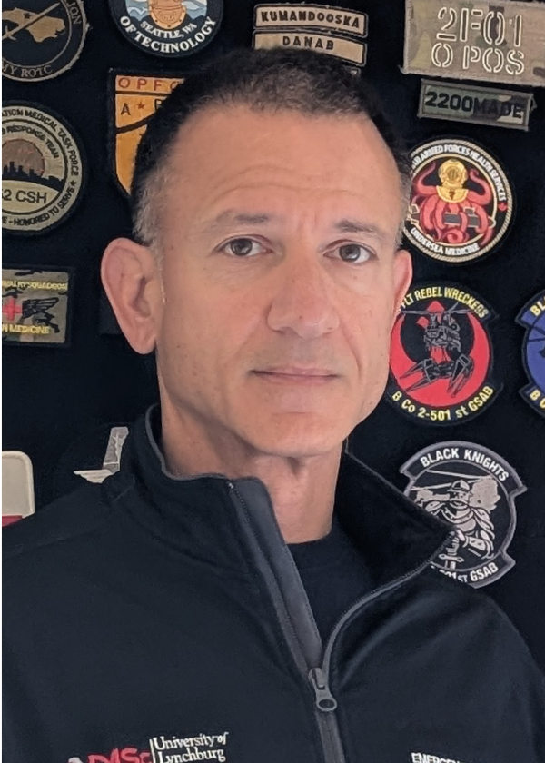

About us

Transatlantic Medical was founded by Dr. Matthew Delaney to bring global, standardized disaster and incident management training to a wider audience. We incorporate best practices from NIMS, JESIP, and NATO to train responders and emergency managers to lead, manage, and coordinate effectively.
In addition, we research and develop AI-enabled clinical decision making and medical simulation tools to support the delivery of high quality medical care in the most challenging prehospital environments.
CONTACT US to learn more about our work and our research